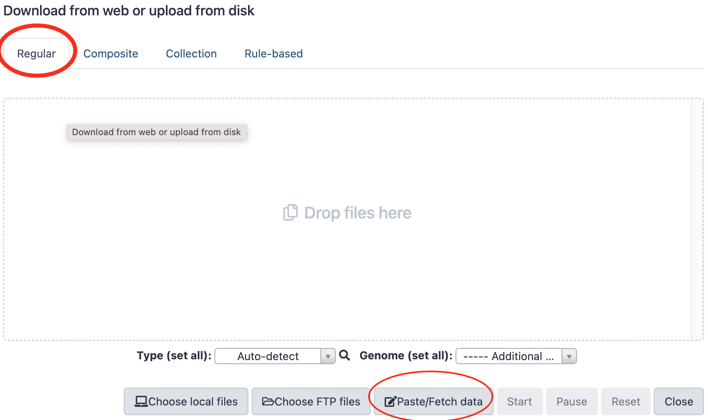
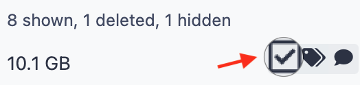

LOAD INPUT DATA
For the training, we need three types of datasets
- The reference sequences that will be used to align sequencing reads (full genome, miRNA, transposons, etc.)
- libraries of sequencing reads from small RNAs (for analysis of piRNAs)
- Librairies of sequencing reads from mRNA (for Gene differential expression analysis)
All these data have been deposited in 2 differents repositories. A first one is a so-called S3 Amazon bucket. The second one is a Nextcloud server located at Sorbonne-Université. You may get your input data from one or the other repositories.
Get data "by URL"¶
We are going to focus on one method to upload data in galaxy, which is applicable when these data are available through a URL (Universal Resource Location).
The other methods to upload data in Galaxy are:
- transfering data from your local machine (the one that is running your web browser) to Galaxy
- uploading data to your Galaxy FTP account and then transfering these data from your
Galaxy FTP directory to one of your Galaxy histories. We are not going to use them in
this training, and invite you to look at one of the "Galaxy tours" available
in the menu
Help
Interactive tours
1. Single URL, simple trial.¶
- Click the
Upload Databutton at the top-left corner of the Galaxy interface:
- Stay with the regular tab and click the
Paste/Fetch databutton

- Paste the following url in the open text field,
- Paste
PlacW.fastain the name text field (instead ofNew File) - Finally, press the dark-blue
Startbutton.
→ a dataset should appear soon in your current history and turn green when the upload is complete.
2. Upload of reference files as a batch of multiple URLs  Programmatic file naming¶
Programmatic file naming¶
Delete the previously uploaded dataset, we are going to re-upload it in a batch.
- Click the
Upload Databutton at the top-left corner of the Galaxy interface. - This time, Click the
Rule-basedtab ! - Leave Upload data as
Datasetsand Load tabular data fromPasted Table - In the text field
Tabular source data to extract collection files and metadata from, paste the following Tabular source data:
 ,
,  and
and 
Reference URLs for team
https://usegalaxy.sorbonne-universite.fr/nextcloud/index.php/s/B433xtdmdQqdFYd/download?path=%2F&files=dmel-all-r6.18.gtf dmel-all-r6.18.gtf
https://usegalaxy.sorbonne-universite.fr/nextcloud/index.php/s/B433xtdmdQqdFYd/download?path=%2F&files=dmel-all-miscRNA-r6.18.fasta miscRNA
https://usegalaxy.sorbonne-universite.fr/nextcloud/index.php/s/B433xtdmdQqdFYd/download?path=%2F&files=PlacW.fasta PlacW
https://usegalaxy.sorbonne-universite.fr/nextcloud/index.php/s/B433xtdmdQqdFYd/download?path=%2F&files=dmel-all-ncRNA-r6.18.fasta ncRNA
https://usegalaxy.sorbonne-universite.fr/nextcloud/index.php/s/B433xtdmdQqdFYd/download?path=%2F&files=dmel-all-miRNA-r6.18.fasta miRNA
https://usegalaxy.sorbonne-universite.fr/nextcloud/index.php/s/B433xtdmdQqdFYd/download?path=%2F&files=dmel-all-intron-r6.18.fasta introns
https://usegalaxy.sorbonne-universite.fr/nextcloud/index.php/s/B433xtdmdQqdFYd/download?path=%2F&files=dmel-all-gene-r6.18.fasta genes
https://usegalaxy.sorbonne-universite.fr/nextcloud/index.php/s/B433xtdmdQqdFYd/download?path=%2F&files=Dmel_piRNA_clusters.fasta piRNA_clusters
https://usegalaxy.sorbonne-universite.fr/nextcloud/index.php/s/B433xtdmdQqdFYd/download?path=%2F&files=Dmel_all-transposon_merge.fasta all-transposons
https://usegalaxy.sorbonne-universite.fr/nextcloud/index.php/s/B433xtdmdQqdFYd/download?path=%2F&files=dmel-all-chromosome-r6.18.fasta dmel-r6.18
https://usegalaxy.sorbonne-universite.fr/nextcloud/index.php/s/B433xtdmdQqdFYd/download?path=%2F&files=dmel-all-transcript-r6.18.fasta transcripts
https://usegalaxy.sorbonne-universite.fr/nextcloud/index.php/s/B433xtdmdQqdFYd/download?path=%2F&files=dmel-all-tRNA-r6.18.fasta tRNA
Reference URLs for team
https://analyse-genomes.s3.eu-west-3.amazonaws.com/References/PlacW.fasta PlacW
https://analyse-genomes.s3.eu-west-3.amazonaws.com/References/dmel-all-ncRNA-r6.18.fasta ncRNA
https://analyse-genomes.s3.eu-west-3.amazonaws.com/References/dmel-all-miscRNA-r6.18.fasta miscRNA
https://analyse-genomes.s3.eu-west-3.amazonaws.com/References/dmel-all-miRNA-r6.18.fasta miRNA
https://analyse-genomes.s3.eu-west-3.amazonaws.com/References/dmel-all-intron-r6.18.fasta introns
https://analyse-genomes.s3.eu-west-3.amazonaws.com/References/dmel-all-gene-r6.18.fasta genes
https://analyse-genomes.s3.eu-west-3.amazonaws.com/References/dmel-all-chromosome-r6.18.fasta dmel-r6.18
https://analyse-genomes.s3.eu-west-3.amazonaws.com/References/Dmel_piRNA_clusters.fasta piRNA_clusters
https://analyse-genomes.s3.eu-west-3.amazonaws.com/References/Dmel_all-transposon_merge.fasta transposons
https://analyse-genomes.s3.eu-west-3.amazonaws.com/References/dmel-all-r6.18.gtf dmel-all-r6.18.gtf
https://analyse-genomes.s3.eu-west-3.amazonaws.com/References/dmel-all-transcript-r6.18.fasta transcripts
https://analyse-genomes.s3.eu-west-3.amazonaws.com/References/dmel-all-tRNA-r6.18.fasta tRNA
Reference URLs for team
https://storage.googleapis.com/analyse-genome-coupon-1/References/PlacW.fasta PlacW
https://storage.googleapis.com/analyse-genome-coupon-1/References/dmel-all-ncRNA-r6.18.fasta ncRNA
https://storage.googleapis.com/analyse-genome-coupon-1/References/dmel-all-miscRNA-r6.18.fasta miscRNA
https://storage.googleapis.com/analyse-genome-coupon-1/References/dmel-all-miRNA-r6.18.fasta miRNA
https://storage.googleapis.com/analyse-genome-coupon-1/References/dmel-all-intron-r6.18.fasta introns
https://storage.googleapis.com/analyse-genome-coupon-1/References/dmel-all-gene-r6.18.fasta genes
https://storage.googleapis.com/analyse-genome-coupon-1/References/dmel-all-chromosome-r6.18.fasta dmel-r6.18
https://storage.googleapis.com/analyse-genome-coupon-1/References/Dmel_piRNA_clusters.fasta piRNA_clusters
https://storage.googleapis.com/analyse-genome-coupon-1/References/Dmel_all-transposon_merge.fasta transposons
https://storage.googleapis.com/analyse-genome-coupon-1/References/dmel-all-r6.18.gtf dmel-all-r6.18.gtf
https://storage.googleapis.com/analyse-genome-coupon-1/References/dmel-all-transcript-r6.18.fasta transcripts
https://storage.googleapis.com/analyse-genome-coupon-1/References/dmel-all-tRNA-r6.18.fasta tRNA
- Click the
Buildbutton - In the
Build Rules ...pannel that opened, click the and choose
and choose Add/Modify Column Definitions - Click a first time on
Add Definitionand SelectURL. Leave the URL column toA - Click a second time on
Add Definition, selectNameand choose the columnBforName - Now, click the
Applybutton - And to finish the job, click on the dark-blue button
Upload - After the upload is complete, rename the history "References"


3. Upload of small RNA sequencing datasets Programmatic dataset naming.¶
Before all, create a new history by clicking the + icon in the history header
 and immediately renaming the new history as
"Small RNA sequence datasets".
and immediately renaming the new history as
"Small RNA sequence datasets".
- Click the
Upload Databutton at the top-left corner of the Galaxy interface. - Click the
Rule-basedtab as we just did with the reference datasets - Leave Upload data as
Datasetsand Load tabular data fromPasted Table - In the text field
Tabular source data to extract collection files and metadata from, paste the following Tabular source data:
small RNAseq datasets for
https://usegalaxy.sorbonne-universite.fr/nextcloud/index.php/s/LqKb3Qmy8m9RXtk/download?path=%2F&files=GRH-103_R1.fastq.gz GRH-103
https://usegalaxy.sorbonne-universite.fr/nextcloud/index.php/s/LqKb3Qmy8m9RXtk/download?path=%2F&files=GRH-104_R1.fastq.gz GRH-104
https://usegalaxy.sorbonne-universite.fr/nextcloud/index.php/s/LqKb3Qmy8m9RXtk/download?path=%2F&files=GRH-105_R1.fastq.gz GRH-105
https://usegalaxy.sorbonne-universite.fr/nextcloud/index.php/s/LqKb3Qmy8m9RXtk/download?path=%2F&files=GRH-106_R1.fastq.gz GRH-106
Or
small RNAseq datasets for
https://analyse-genomes.s3.eu-west-3.amazonaws.com/smRNAseq/GRH-103_R1.fastq.gz GRH-103
https://analyse-genomes.s3.eu-west-3.amazonaws.com/smRNAseq/GRH-104_R1.fastq.gz GRH-104
https://analyse-genomes.s3.eu-west-3.amazonaws.com/smRNAseq/GRH-105_R1.fastq.gz GRH-105
https://analyse-genomes.s3.eu-west-3.amazonaws.com/smRNAseq/GRH-106_R1.fastq.gz GRH-106
small RNAseq datasets for
https://storage.googleapis.com/analyse-genome-coupon-1/smRNAseq/GRH-103_R1.fastq.gz GRH-103
https://storage.googleapis.com/analyse-genome-coupon-1/smRNAseq/GRH-104_R1.fastq.gz GRH-104
https://storage.googleapis.com/analyse-genome-coupon-1/smRNAseq/GRH-105_R1.fastq.gz GRH-105
https://storage.googleapis.com/analyse-genome-coupon-1/smRNAseq/GRH-106_R1.fastq.gz GRH-106
- Click the
Buildbutton - In the
Build Rules ...pannel that opened, click the
and choose Add/Modify Column Definitions - Click a first time on
Add Definitionand SelectURL. Leave the URL column toA - Click a second time on
Add Definition, selectNameand choose the columnBforName - Now, click the
Applybutton -
select the Type "fastqsanger.gz" at the bottom of the panel
-
And to finish the job, click on the dark-blue button
Upload
4. RNAseq datasets (for gene differential expression analysis)¶
- Create a new history in Galaxy and rename it
RNA sequence datasets - Click the
Upload Databutton at the top-left corner of the Galaxy interface. - Click the
Rule-basedtab as we just did with the reference datasets - Leave Upload data as
Datasetsand Load tabular data fromPasted Table - In the text field
Tabular source data to extract collection files and metadata from, paste the following Tabular source data:
RNAseq datasets for
https://usegalaxy.sorbonne-universite.fr/nextcloud/index.php/s/LqKb3Qmy8m9RXtk/download?path=%2F&files=WT1_R1.fastq.gz WT1
https://usegalaxy.sorbonne-universite.fr/nextcloud/index.php/s/LqKb3Qmy8m9RXtk/download?path=%2F&files=WT2_R1.fastq.gz WT2
https://usegalaxy.sorbonne-universite.fr/nextcloud/index.php/s/LqKb3Qmy8m9RXtk/download?path=%2F&files=WT3_R1.fastq.gz WT3
https://usegalaxy.sorbonne-universite.fr/nextcloud/index.php/s/LqKb3Qmy8m9RXtk/download?path=%2F&files=SF1_R1.fastq.gz SF1
https://usegalaxy.sorbonne-universite.fr/nextcloud/index.php/s/LqKb3Qmy8m9RXtk/download?path=%2F&files=SF2_R1.fastq.gz SF2
https://usegalaxy.sorbonne-universite.fr/nextcloud/index.php/s/LqKb3Qmy8m9RXtk/download?path=%2F&files=SF3_R1.fastq.gz SF3
Or
RNAseq datasets for
https://analyse-genomes.s3.eu-west-3.amazonaws.com/RNAseq/WT1_R1.fastq.gz WT1
https://analyse-genomes.s3.eu-west-3.amazonaws.com/RNAseq/WT2_R1.fastq.gz WT2
https://analyse-genomes.s3.eu-west-3.amazonaws.com/RNAseq/WT3_R1.fastq.gz WT3
https://analyse-genomes.s3.eu-west-3.amazonaws.com/RNAseq/SF1_R1.fastq.gz SF1
https://analyse-genomes.s3.eu-west-3.amazonaws.com/RNAseq/SF2_R1.fastq.gz SF2
https://analyse-genomes.s3.eu-west-3.amazonaws.com/RNAseq/SF3_R1.fastq.gz SF3
Or
RNAseq datasets for
https://storage.googleapis.com/analyse-genome-coupon-1/RNAseq/WT1_R1.fastq.gz WT1
https://storage.googleapis.com/analyse-genome-coupon-1/RNAseq/WT2_R1.fastq.gz WT2
https://storage.googleapis.com/analyse-genome-coupon-1/RNAseq/WT3_R1.fastq.gz WT3
https://storage.googleapis.com/analyse-genome-coupon-1/RNAseq/SF1_R1.fastq.gz SF1
https://storage.googleapis.com/analyse-genome-coupon-1/RNAseq/SF2_R1.fastq.gz SF2
https://storage.googleapis.com/analyse-genome-coupon-1/RNAseq/SF3_R1.fastq.gz SF3
- Click the
Buildbutton - In the
Build Rules ...pannel that opened, click the
and choose Add/Modify Column Definitions - Click a first time on
Add Definitionand SelectURL. Leave the URL column toA - Click a second time on
Add Definition, selectNameand choose the columnBforName - Click the
Applybutton -
select the Type "fastqsanger.gz" at the bottom of the panel
-
And to finish the job, click on the dark-blue button
Upload
5. Uncompress datasets¶
At this stage, we have uploaded small RNA and RNA sequencing datasets as fastqsanger.gz.
To simplify the subsequent analyzes we are going to uncompress all these datasets, whose
datatype will therefore become fastqsanger.
Procedure for a single dataset¶
- Go to your
small RNA input datasetshistory (or whatever you named it). - Click on the pencil icon
 of the first dataset.
of the first dataset. -
Click on the tab
Convert , NOT on the tab
, NOT on the tab datatype .
.Why 'Convert file' is different from 'Change Datatype' ?
- Let's imagine a Galaxy dataset whose name is
Hamlet - the content of this dataset is:
- Would you agree that the
datatypeof this dataset isenglish? I think so. - Let's put it all together in the form of:
Now, what if you change the
This does not seem correct ! Do you aggree ?Datatypeof this dataset fromenglishtofrenchusing theedit attributepanel? This →If you
It is looking better, isn't it ?Convertinstead this dataset fromenglishtofrench, you will have This →In contrast, if your starting dataset was as this:
There, you would "just" change the Datatype of the dataset fromenglishtofrenchand get: - Let's imagine a Galaxy dataset whose name is
-
Select
Convert compressed file to uncompressed - Click on

→ A new dataset is created. During the decompression job, its name looks like
5: Convert compressed file to uncompressed. on data 1. But when the job finishes, the
name of the dataset changes to more self-explanatory: 5: GRH-103 uncompressed.
Repeat the same procedure for every small RNAseq dataset.¶
Repeat the same procedure for every RNAseq dataset.¶
Naturally, you can launch as many jobs as you need in the same time
When all datasets are decompressed¶
- Delete the compressed datasets (by clicking on the cross icon of datasets).
- Rename the uncompressed datasets by removing the
uncompressedsuffix. -
Purge the deleted datasets. This is done by clicking the wheel icon of the top history menu, and selecting
Purge Deleted Datasetsin the Datasets Actions section.
 If you do not perform this last action, the deleted datasets remain on your
instance disk !
If you do not perform this last action, the deleted datasets remain on your
instance disk !
6. Dataset collections 
 ¶
¶
If we have enough time, we are going to organize our various datasets using an additional structure layer: the Galaxy Collection.
A Galaxy Collection is a container object which is very convenient to treat together multiple equivalent datasets, such as a list of sequencing dataset, of text labels, of fasta sequences, etc.
For those of you who are a bit familiar with Python language, a Galaxy Collection is actually
just a dictionary, whose keys are the names of the datasets in the collection (in Galaxy
these names are referred to as element identifiers), and values are the paths to the
corresponding datasets. Well, a dictionary as I said 
A. Making a collection of the small RNA sequence datasets.¶
For clarity, we are going first to copy the small RNA sequence dataset from their initial history to a new history.
- Go to your small RNAseq sequence datasets.
-
Click on the wheel icon of the history top menu
-
Select the submenu
Copy Datasetsin the sectionDataset Actions - In the pop-up panel,
Source History:, check-in the 4 small RNA sequencing datasets - In the same pop-up panel,
Destination History:, fieldNew history named, write - Click the
Copy History Itemsbutton. -
Still on the same pop-up panel, at the top in a green area, you have now a
 to the
new history that was created and where the datasets were copied. Click on that link !
to the
new history that was created and where the datasets were copied. Click on that link !When you copy datasets in that way...
The new datasets actually do not take any space on your disk. New symbolic links to the actual files are only created.
-
Now, that your are in the new history, click on the checkbox icon in the top area of the history. 
- Check-in the 4 small RNA datasets
- In the menu
Pour toute la sélection(also in the top area of the history), selectBuild Dataset List - In the pop-up panel, just write a meaningful name in the field
Name, something like - Press the button
Create Collection
What do you see when you click on name of the new dataset collection? (please not the  ...)
...)
You see the content of the collection, with datasets identified with names called `element_identifiers.
Click on the recycling icon  , or, the
, or, the < back to
the Small RNA Collection link, to come back to the normal history view.
what do you see if you click the hidden hyperlink at the top right corner  ?
?
You see the actual dataset contained in the Collection. If you click on unhide for
each of these datasets, you will actually see both the container collection and the contained
datasets !
B. Making 2 collections RNA sequence datasets.¶
For RNAseq datasets, collections are also very convenient. However, it is even better to anticipate the type of analysis that you are going to perform. Indeed, you are going to compare 3 "test" (mutant, treated, whatever...) datasets with 3 control datasets.
Therefore, we are going to organise the RNAseq datasets as 2 collections: a collection WT
and a collection SF.
- Go back to your RNAseq input datasets history
- As before, copy the 6 RNAseq dataset to a new history which you will name
RNAseq dataset Collections - This time, create first a collection by only checking the three datasets
WT1,WT2andWT3, which you will name: - Create also a second collection by only checking the three datasets
SF1,SF2andSF3, which you will name:
 or
or  !
!